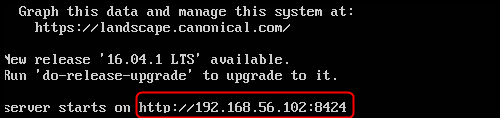
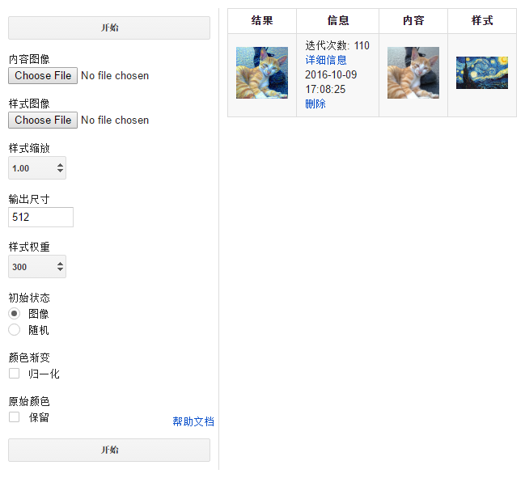

深度熔合使用说明
深度熔合服务器打开后，命令行终端会出现服务器的地址

将命令行里显示的地址输入浏览器就能进入网页界面

网页界面参数说明
内容图像
原始内容图像，合成时会以这张图的形状，明暗作为基准。
样式图像
样式图像，合成时会从中选取各类样式和材质填充到内容图像中。
样式缩放
相当于样式图像在合成之前的预处理，可以放大或缩小。
输出尺寸
输出图像的长宽比例与内容图一致，输出尺寸定义了长宽两者中的最大值。
样式权重
样式权重越大，则原始图像的形状保留的越少。
初始状态
初始状态为图像更容易快速得到合适的结果，而初始为随机可能需要额外的几百次迭代才能达到相同效果。
但初始状态随机能带来更多的可能性，同时会让样式图的特征更充分的表达在输出图像里。
颜色渐变
根据原站的文档，如果选中归一化，更适合一些抽象样式的合成。
原始颜色
如果选中保留，将尽可能保留内容图的颜色。
输出列表说明
结果
输出结果图，每5次迭代结果图刷新一次。会随着时间逐渐改善。
点击结果图可以查看大图。
信息
任务开始时间和迭代次数，最初的迭代需要的时间稍长，之后每次迭代需要几秒钟（取决于CPU），到1000次迭代自动停止。
点击详细信息可以进入任务详情的页面，包括生成图像的历史记录，和创建时使用的参数
点击删除会将选中的这条记录删除。
通常要达到理想的合成效果至少需要200次迭代，要耐心等待。
内容 和 样式
最初输入的内容图和样式图